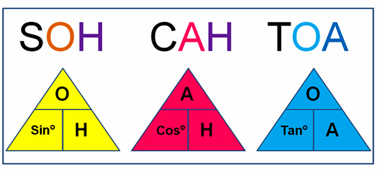

Trigonometric ratios of an acute angle in a right triangle express the relationship between the angle and length of its sides.


From our observations, it is now clear that the values of the trigonometric ratios of an angle do not vary with the lengths of the sides of the triangle, if the angle remains the same.
